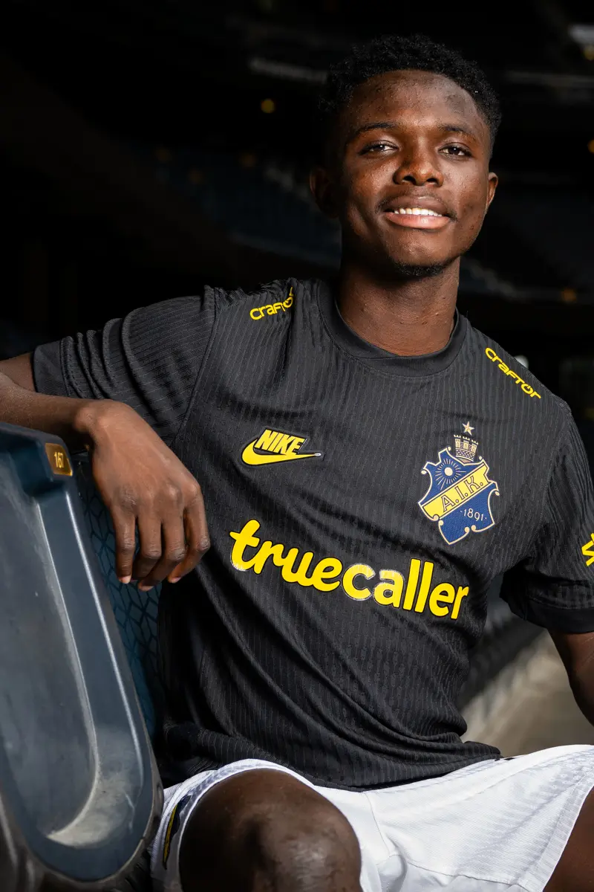
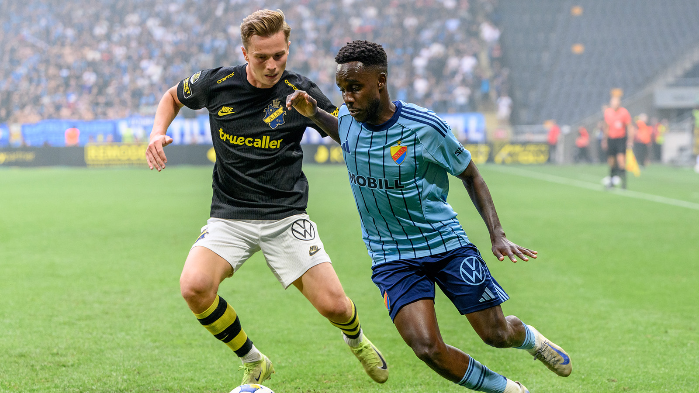
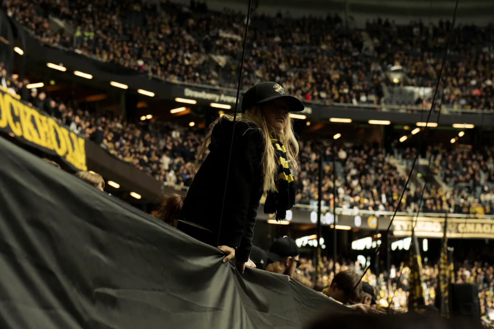

Välkommen till Gnagets hem på nätet
AIK är inte bara en klubb, det är en livsstil. Sedan grundandet 1891 i Stockholm har vi varit en ledande kraft inom svensk idrott. Här hittar du senaste nytt om våra hjältar i svart och gult.
AIK är inte bara en klubb, det är en livsstil. Sedan grundandet 1891 i Stockholm har vi varit en ledande kraft inom svensk idrott. Här hittar du senaste nytt om våra hjältar i svart och gult.
AIK Fotboll är överens med Ikon Allah FC om en transfer av den 18-årige offensiva mittfältaren, Zadok Yohanna. Avtal med den unge nigerianen sträcker sig fram till den 31 december 2029.

AIK - Djurgården
Söndag kl. 15:00
Nationalarenan

